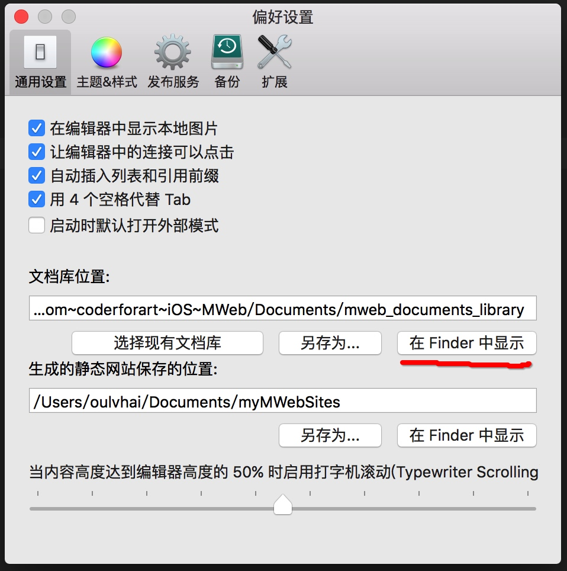

MWeb for Mac 启动时出现未找到文档库的数据库文档的解决方案
最近连续有两位朋友问到这个，所以就写这篇文章。
出来的提示的全文为：
未找到文档库的数据库文档，请检查偏好设置中的文档库位置设置，设置正确后请重启 MWeb 即可。
提示中说请检查偏好设置中的文档库位置的设置，所以要先打开 MWeb 的偏好设置，CMD + , 或者用菜单： MWeb - 偏好设置 即可打开，打开后的通用设置如下：

点击 “在 Finder 中显示” 按钮，将会在 Finder 中显示你设置的文档库的位置。然后正常的文档库的文件结构是肯定会有 docs 文件夹和 mainlib.db 文件，如果启动时出现提示，就是肯定没有这两个文件，这就需要你找回这两个文件并放到这个位置，然后重启 MWeb 即可。
找不到这两个文件的解决办法
如果找不到这两个文件，可以去初始位置看看，初始的位置为：
~/Library/Containers/com.coderforart.MWeb/Data/Documents/MWeb/mainlib
用 Finder 的菜单：前往 - 前往文件夹，并填入以下地址，应该可以去到这个位置。
完全初始化文档库的办法
如果你想完全初始化文档库，可以按以下步骤：
- 按上面，在偏好设置 - 通用设置 - 文档库位置 中，点击 “在 Finder 中显示”，然后确认文档库所在的文件夹里没有
docs文件夹和mainlib.db文件，如果有，请移动到别处。 - 退出 MWeb，然后在命令行中运行：
defaults write com.coderforart.MWeb isV2LibraryInstalled -bool no。 - 重启 MWeb 即可。
把 MWeb Lite 版的文档库移动到 MWeb 付费版中
目前仅支持把 Lite 版中的文档导入到未分类中，Lite 版的分类信息就不能导入了，只能手动再新增了。方法如下：
- 在 Finder 中，用菜单：前往 - 前往文件夹，填入
~/Library/Containers/com.coderforart.MWebLite/Data/Documents/MWeb/LocalData/前往 Lite 版的文档库的文档的保存位置。 - 在 Lite 版文档库位置中会有
docs文件夹，把里边的内容跟付费版文档库的docs文件夹合并，注意是合并。 - 在付费版中，选择所有文档或者未分类文档即可看到 Lite 版的文档已被导入了。
提示：如果你有自定义到 Lite 版的编辑器样式，预览样式，静态网站模板，也需要手动复制到付费版的相关位置。